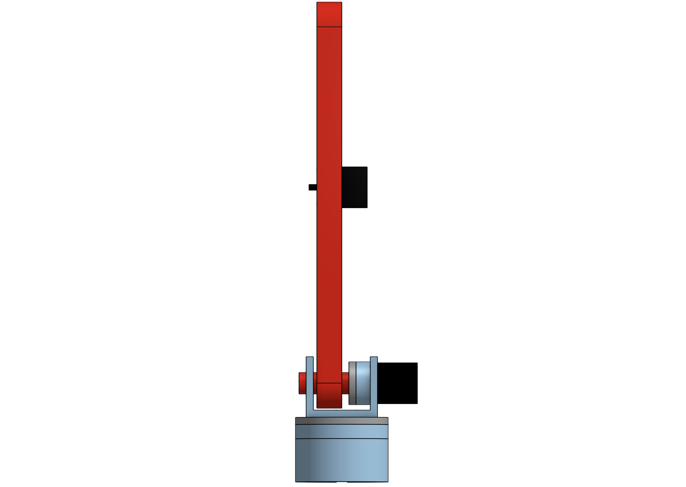
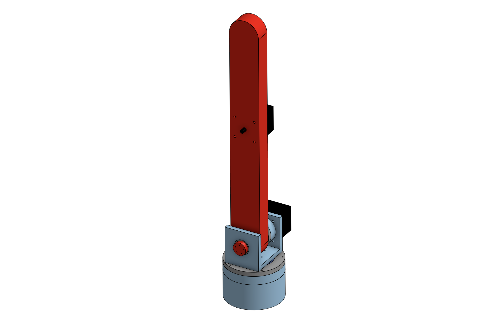
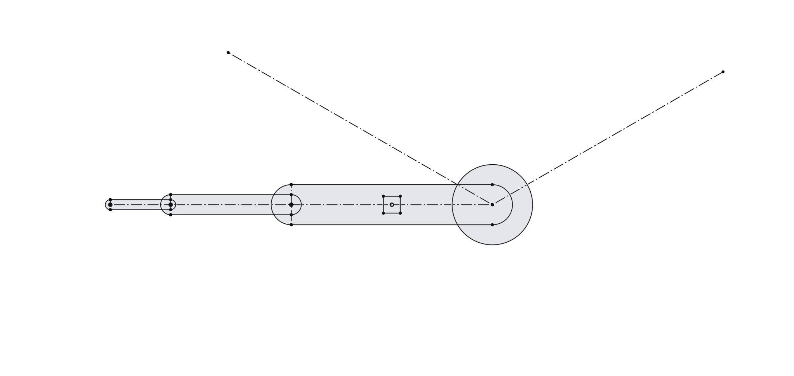
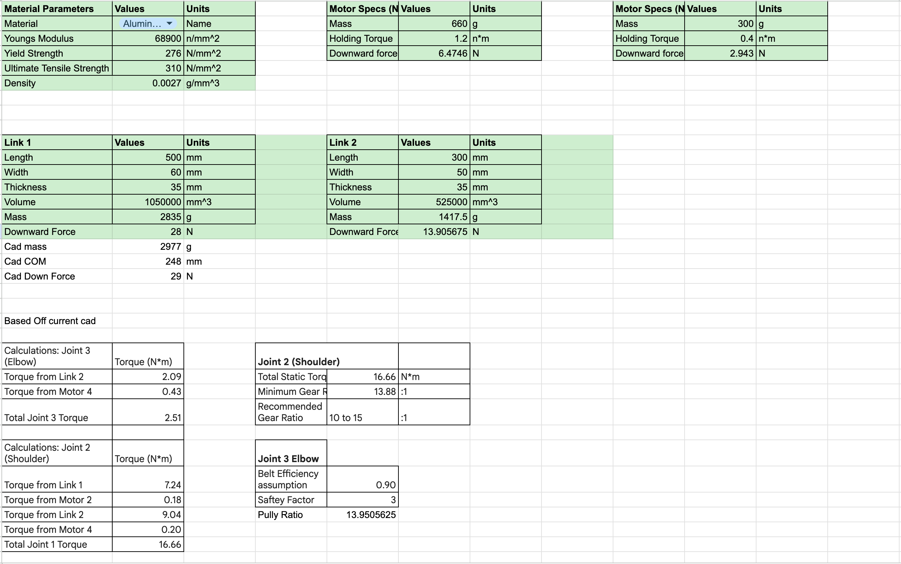
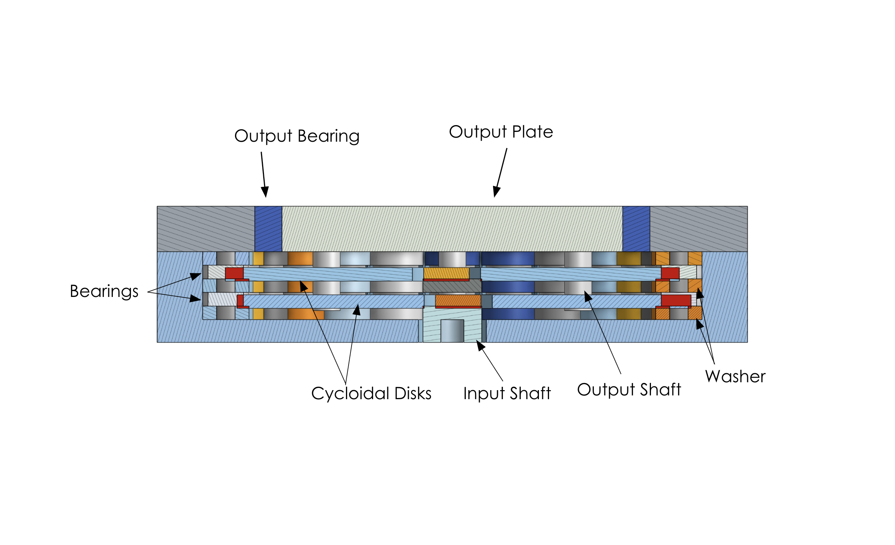
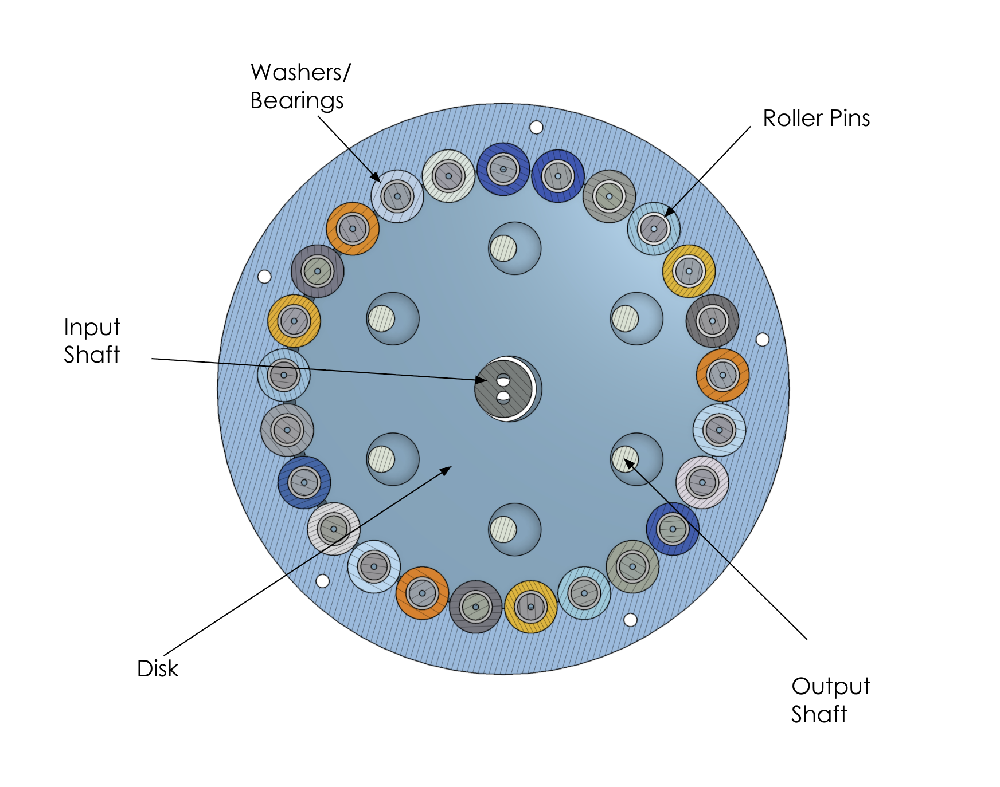

6-DOF Robotic Arm
Mechanical Design Phase
This is an end-to-end robotic arm project in progress, with the current documented work focused on mechanical design: CAD layout, joint architecture, preliminary torque calculations, drivetrain exploration, and packaging.







